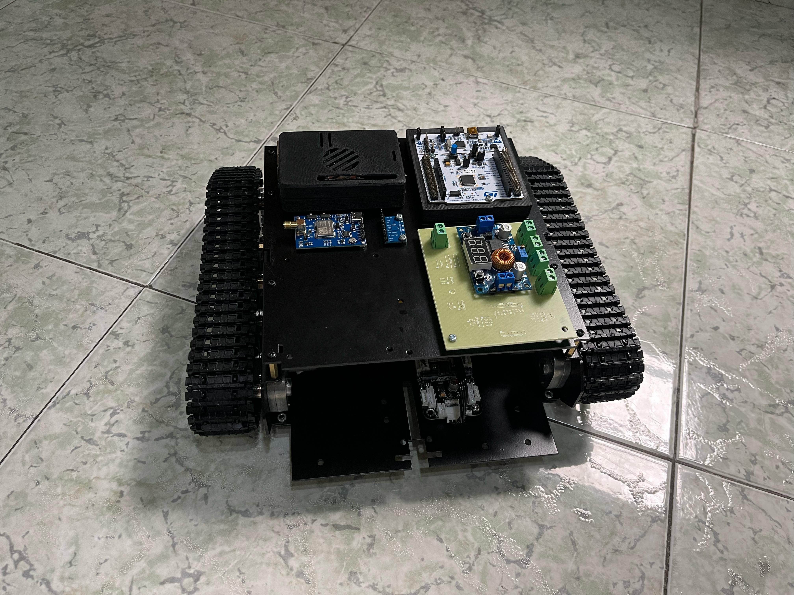

🧰 Elección de componentes
Para la elección de componentes se buscaron las mejores referencias que se adaptaran a GreenCut con el fin de que sea eficiente y no tenga un peso elevado. Aquí encontrarás los componentes que usamos con su respectiva referencia.
| # | Elemento | Referencia |
|---|---|---|
| 1 | Batería | BATERIA SELLADA 12v-18 AH FL12180GS |
| 2 | Chasis | Diseño de Solid |
| 3 | Cargador inteligente | |
| 4 | Cable | Cable 18 AWG |
| 5 | Módulo GPS RTK | Rtk 1 De Nivel Centimétrico |
| 6 | Antena GPS | Quectel-antena YB0017AA GNSS L1 L5 |
| 7 | Adaptador | Adaptador RF SMA Hembra a uFL |
| 8 | Jumpers | |
| 9 | Paro de emergencia | |
| 10 | MOTOR N20 500rpm | Motorreductor de metal 12V 500RPM N20 |
| 11 | Convertidor de voltaje sensores | |
| 12 | Convertidor de voltaje STM | LM2596 REDUCTOR SALIDA USB |
| 13 | Convertidor de voltaje motores | Conversor DC-DC Tipo Buck Ajustable 12A |
| 14 | Ultrasonido | SRF02 |
| 15 | Motores | |
| 16 | STM | STM32F401 |
| 17 | Cepillo | Cabezal De Corte De Césped |
| 18 | Cámara | Cámara Nocturna Ov5647 1080p |
| 19 | Tornillos | |
| 20 | Lámina | Diseño propio |
| 21 | PCB | Diseño propio |
| 22 | Disipador | Disipador con Ventilador Activo |
| 23 | Memoria | SanDisk SDSQXA2-064G-GN6MA |
| 24 | Raspberry | Raspberry Pi 5 4GB |
| 25 | IMU-9250 | Giroscopio Acelerómetro Mpu-9250 Gy-9250 |
📁 Planos
Luego de escoger los componentes y haber realizado el diseño en CAD, se realiza la validación por F.E.A. con el fin de agregar las cargas que va a soportar el chasis para ver que tanto puede soportar.
 Base del servomotor
Base del servomotor
 Carcasa del regulador
Carcasa del regulador
 Case de la cámara
Case de la cámara
🖥️ Análisis por elementos finitos
Luego de escoger los componentes y haber realizado el diseño en CAD, se realiza la validación por F.E.A. con el fin de agregar las cargas que va a soportar el chasis para ver que tanto puede soportar.
👷🏼♀ Contrucción
Con la F.E.A validada se corta y dobla la lámina de aluminio y se realiza el ensamble del carro con los componentes y la sensórica.
